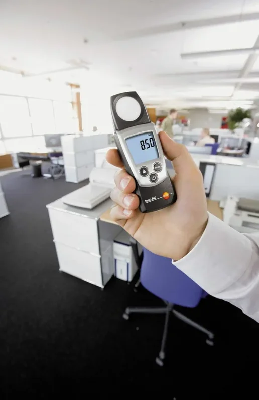
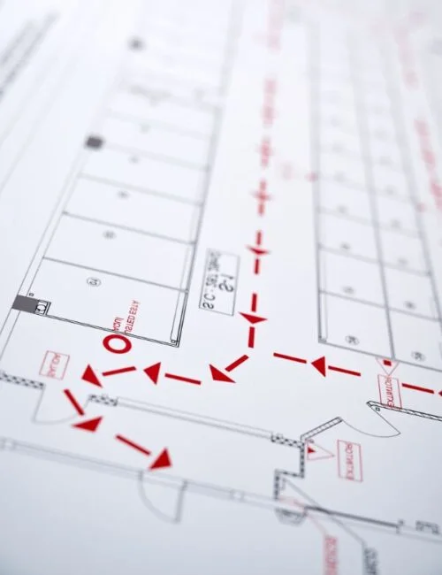
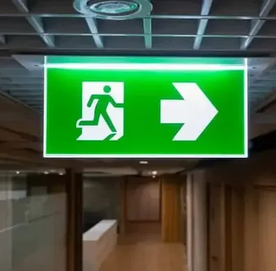
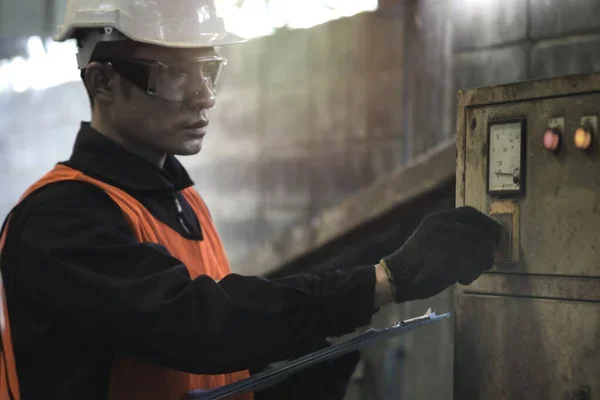
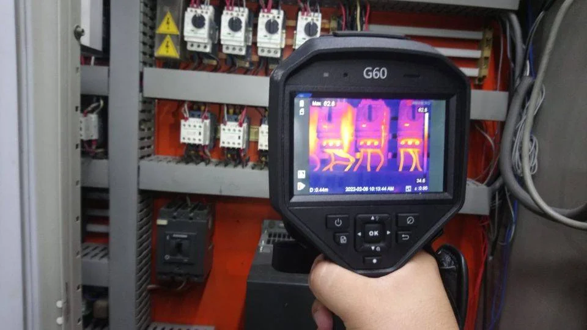

MEDICIÓN DE PUESTA A TIERRA
Resolución 900/15 SRT. Realizamos protocolo de Medición de Puesta a Tierra y Continuidad de Masas.
SOLICITE SU PRESUPUESTODenominada "Protocolo para la Medición del Valor de Puesta a tierra y la verificación con la continuidad de las masas en el Ambiente Laboral", tiene por principal objetivo veritfcar el cumplimiento de las condiciones de seguridad de las instalaciones eléctricas frente a los riesgos de contacto indirecto a que pueden quedar expuestos los trabajadores ante una falla de aislación.
Para ello el Protocolo exige realizar no solo la medición de la puesta a tierra de seguridad de las masas, sino verificar la continuidad de las masas con el circuito de tierra, así como también verificar el tiempo de desconexión de los dispositivos de protección empleados (por ejemplo interruptores diferenciales o "disyuntores")
Cumpla con la Resolución 900/15 evite multas y a su vez trabaje tranquilo en un entorno seguro para el personal de su empresa
Todos los trabajos se entregan con certificado de Calibración de los Instrumentos utilizados
Innovación y compromiso con la seguridad y el cumplimiento normativo en GS Ingenieria.
Cumpliendo con el protocolo que dicta la resolución 84/12 de SRT, para la medición de la iluminación en el ambiente labora, asegurando la higientey seguridad en el trabajo.
La resolución 84/12 de la SRT establece el protocolo para la medición de la iluminación en el ambiente laboral. Esta norma modifica o complementa a cinco normas existentes sobre higiente y seguridad en el trabajo.
Las normas modificadas y/o complementadas por la resolución 84/12 incluyen la ley 19587 (1972), Ley 24557 (1995), Ley 25212 (2000), Decreto 1057/2003 y Decreto 249/2007
El protocolo de medición de la iluminación asegura que se cumplan los estándares necesarios para un ambiente laboral seguro y saludable.

GS Ingenieria te ofrece los beneficios clave de nuestro servicio de cumplimiento de normativa de iluminación.
Cumplir con la normativa de iluminación asegura un entorno laboral seguro y saludable, mejora la productividad y reduce riesgos de sanciones por incumplimiento.
Contamos con profesionales especializados en higiente y seguridad que guiarán cada etapa del proceso de medición e implementación de la iluminación adecuada.
Adaptamos el plan de iluminación a las necesidades especificas de cada cliente, asegurando soluciones efectivas y adecuadas.
Ofrecemos soporte integral para el mantenimiento y actualización de los sistemas de iluminación, garantizando su efectividad a largo plazo.
Conoce las etapas clave para la implementación efectiva del cumplimiento de la normativa de iluminación en tu establecimiento con GS Ingenieria.
Realización de un relevamiento inicial para evaluar las condiciones de iluminación en el ambiente laboral.
Implementación de las normativas según la resolución 84/12 para asegurar que se cumplan los estándares de iluminación.
Mantenimiento y monitoreo continuo de los sistemas de iluminación para gatantizar su conformidad con la normativa vigente.
Evaluación y determinación del nivel sonoro continuo equivalente (NSCE o Leq) en puestos de trabajo, ruidos impulsivos o de impacto, analisis de espectro por bandas de octavas. Conforme con las previsiones de la Ley de Higiente y Seguridad en el Trabajo N° 19587/72, Decreto N° 295/03. Resolución N°85/2012, Protocolo para la medición del nivel de ruido en el Ambiente Laboral.
Dosimetría de ruido con determinación del nivel sonoro continuo equivalente (NSCE o Leq) y dosis recibida en puestos de trabajo criticos. Según Ley 19587/72, Decreto 351/79, Resolución 295/03, para determinar la exposición a Agente de Riesgo 90001, según disposición SRT 02/2014.
Innovación y compromiso con la seguridad y el cumplimiento normativo en GS Ingenieria.
Indirectamente, la carga de fuego es un indicador de la magnitud del riesgo potencial de incendio que presenta un edificio o instalación industrial. Es decir, el año que se podría ocasionar en caso de incendio en un determinado establecimiento.
Este valor es muy útil para determinar las instalaciones de deteccíon y control de incendios, como también para determinar las caracteristicas constructivas de la edificación.
La carga de fuego se define como el peso en madera por unidad de superficie (Kg/M2), capaz de desarrollar una cantidad de calor por combustión equivalente de los materiales contenidos en el sector de incendio sometido al estudio.
Como patrón de referencia se considera la madera con poder calorífico inferior a 4400 Cal/Kg.


GS Ingenieria te ofrece beneficios clave de nuestro servucio de estudio de carga de fuego.
Realizar relevamiento de las caracteristicas del lugar y determinar el riesgo de incendio.
Cálculo de carga de fuego en base a los materiales combustibles existentes.
Calculo de la cantidad de extintores necesarios para el control del fuego.
Implementación de sistemas de detección temprana de incendios y de extinción para asegurar la efectividad del plan.
Conoce las etapas clave para la implementación efectiva del Estudio de Carga de Fuego en tu establecimiento con GS Ingenieria
Evaluación inicial de las caracteristicas del lugar para determinar el riesgo de incendio.
Cálculo detallado de la carga de fuego considerando todos los materiales combustibles presentes.
Implementación de sistemas de detección y extinción, y su mantenimiento regular para garantizar la seguridad continua

DDJJ RAR (Relevamientos de Agentes de Riesgo) y RGRL (Relevamiento General de Riesgos Laborales) ante las ART (Aseguradoras de Riesgos de Trabajo)
SUBDIMENSIONAMIENTO DE LLAVES Y/O CABLEADOS; BORNES FLOJOS; EMPALMES MAL REALIZADOS; CIRCUITOS SOBRECARGADOS
SOLICITAN ESTOS INFORMES Y PUEDEN BAJAR LAS PRIMAS DE SEGURO
Permite identificar problemas potenciales antes de que se conviertan en fallas críticas. Al detectar puntos calientes en los componentes eléctricos, como interruptores, conexiones, fusibles y cables, se pueden tomar medidas preventivas para evitar sobrecalentamiento, cortocircuitos o daños en el equipo.
Evaluación del estado: La termografía de tableros ayuda a evaluar la calidad y el rendimiento de los sistemas eléctricos. Puede identificar desequilibrios de carga, conexiones flojas, sobrecargas y otros problemas que afectan el funcionamiento óptimo de los sistemas eléctricos.
Cuando se produce una interrupción en un sistema eléctrico, la termografía puede ser útil para identificar rápidamente la causa subyacente, lo que acelera el proceso de diagnóstico y reparación.
La termografía de tableros es una herramienta esencial para garantizar la seguridad en entornos industriales y comerciales, ya que ayuda a prevenir incendios eléctricos y a cumplir con las normativas de seguridad eléctrica.

Para realizar una termografía de tableros, se utiliza una cámara termográfica que captura imágenes de la radiación infrarroja de los componentes eléctricos. Estas imágenes se analizan para identificar las áreas con temperaturas inusualmente altas, lo que puede indicar problemas potenciales. Los técnicos y especialistas en mantenimiento utilizan esta información para tomar medidas correctivas antes de que se produzcan fallas graves. En resumen, la termografía de tableros es una herramienta valiosa en la gestión de mantenimiento eléctrico, ya que ayuda a prevenir problemas, mejorar la eficiencia de los sistemas eléctricos y garantizar la seguridad en entornos donde se utilizan sistemas eléctricos y electrónicos.
+549 11 4180-7008
GSTUDER@GMAIL.COM
BUENOS AIRES - ARGENTINA